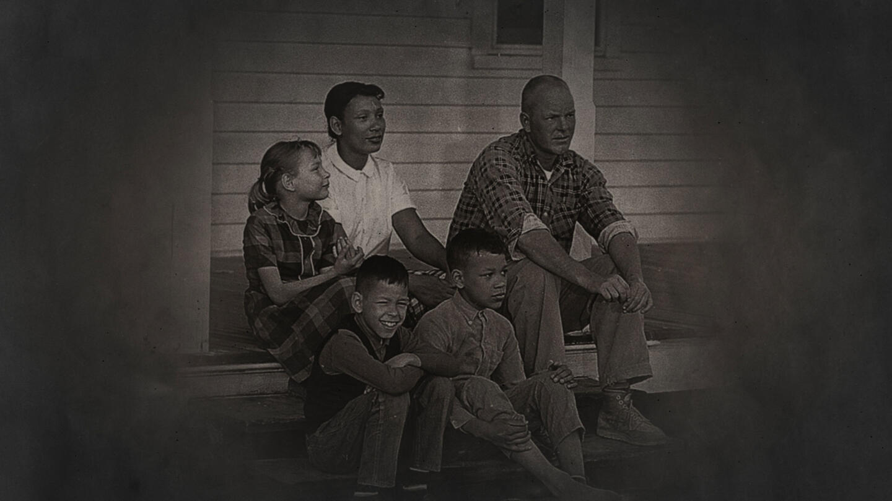

| Quiz | Sources |
Loving v. Virginia was a supreme court case that struck down the ban on interracial marriage, during the era of Jim Crow Laws. The plaintiffs, were a black woman and a white man named: Mildred and Richard Loving. At the time, interracial marriage was illegal in Virginia, so they traveled to Washington, D.C. to legally be joined in marriage. However, a few weeks after they returned to Virginia, on July 11, 1958, they were woken out of their bed and arrested. The local sheriff told them that they were charged with violating Virginia state law on miscegenation, which recognized interracial marriages as illegal. Miscegenation, refers to the ban on any marriage or interbreeding among other races. Interracial marriage was also illegal under the Racial Integrity Act, which banned interracial marriage by requiring marriage applicants to identify their race. Following the couple pleading guilty, judge Leon M. Bazile, sentenced them to a year in prison, however, later suspended this sentence on the promise they would not return to Virginia for 25 years.
Richard Loving, was a white man whose job was a construction worker. Mildred Loving, was a woman with a mix of Black, and Native American background. The two were from the town of Central Point, which was located within Caroline County, Virginia. They were neighbors who grew up along each other and ended up falling in love with the other. After the court case they were forced to leave their home in Virginia, along with their children: Sidney, Donald, and Peggy. The couple and their family were both forced to leave their home in Caroline County, and move to Washington, D.C. 
While living in Washington, D.C., the couple longed to return to their hometown. In 1963, Mildred Loving wrote a letter to Robert F. Kennedy, who at the time was the U.S. Attorney General. She asked for his help and he referred them to the American Civil Liberties Union (ACLU). The ACLU agreed to take their case, and with the help of two lawyers from the Union: Cohen and Hirschkop, the Lovings began their legal disputes in November, 1963. At first the requested the judge Bazile to vacate their conviction and set aside their sentences. When he refused, the lawyers took the case to the Virginia Supreme Court of Appeals. However, they also upheld the same ruling. One more appeal later, and it made its way to the United States Supreme Court in April, 1967.
During the trial, the opposing side was led by Assistant Attorney General, Robert D. McIlwaine lll of Virginia. He defended the state law on miscegenation, while the lawyers for the Lovings argued that the Virginia statute was illegal under the 14th amendment, which guarantees all citizens due process and equal protection under the law. During one of the trials, the lawyer Hirschkop stated that the state ban on interracial was rooted in racism and white supremacy. He argued that they were not health and wellness laws, but instead slavery laws.
Following much discussion and thought, the Supreme Court unanimously decided that the ban on interracial marriage did in fact breach the rights under the 14th amendment, and on June 12th they announced their verdict. This ruling also dismantled the ban on interracial marriage in 16 other states. During the legal disputes, the Lovings lived in secret on a farm in Virginia, however, after they moved back to their hometown to continue raising their children. Even though the court made the decision to dismantle the ban on interracial marriage, other states were not as quick to remove the ban. The last state to remove their ban was Alabama. June 12th, is now the anniversary to celebrate the decision of Loving v. Virginia, also known as Loving Day
.